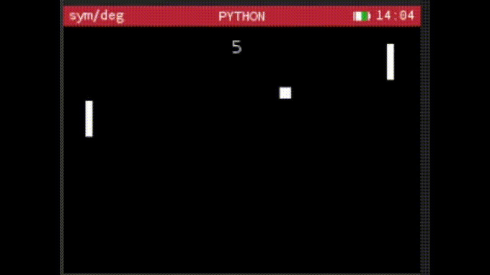
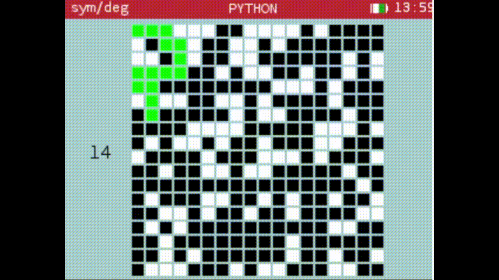

Difficultés
La principale difficulté résidait dans le fait de programmer sur une
plateforme que je ne connaissais pas : la calculatrice NumWorks, et
avec un langage de programmation que je ne maîtrisais pas. Cela m'a
permis d'apprendre les bases de Python.
De plus, la calculatrice a une taille de fichier très limitée, ce qui
m'a contraint à créer le jeu Pong avec un script de moins de 2 ko.
Également, la calculatrice ne dispose que de fonctions graphiques peu
avancées et ne possède aucun moteur physique ni gestion d'image.
C'est pourquoi je me suis lancé dans le défi de recréer un moteur
physique rudimentaire, permettant la collision et le déplacement d'un
joueur dans un monde en deux dimensions avec la méthode
'AABB'.
Pour rendre le défi encore plus complexe, j'ai choisi
d'ajouter la capacité au joueur de faire un saut vers l'avant, ce qui
m'a obligé à coder une fonctionnalité pour remettre en place le joueur
même lorsqu'il se déplace à une très grande vitesse, ce qui a
nécessité de nombreux tests supplémentaires.

Cuadrado
J'ai également développé un jeu de puzzle pour la calculatrice. Le but
de ce jeu est de remplir le plus de cases possible sans revenir en
arrière. À chaque lancement du jeu, la carte est générée de manière
aléatoire. J'ai entièrement programmé ce jeu sur la calculatrice en
1h30, sans utiliser d'ordinateur ni d'accès à Internet. Il s'inspire
fortement d'un jeu disponible sur le
Play Store
que j'ai créé avec des amis.

Futur
J'ai pour projet de faire un compresseur vidéo, pour pouvoir afficher
une vidéo simple, avec 2 couleurs et en basse résolution sur la
numworks.